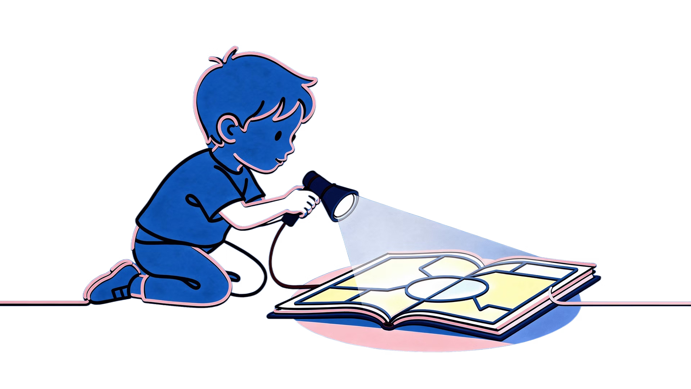

Clean Language · for 8–12
How to help a friend explore their mind without changing their map.
A complete course in Clean Language and Systemic Modelling, taught through a world that renders like a game. You never touch anyone else's world — you ask questions and let them find their own way.
Ages 8–12 · free · no sign-up

Nine parts. Start at Module 0; each one adds a level.
The material is written for the young person. The adult material sits underneath it: how to run the course, what to do when a child says nothing, and what every game word maps to in the clinical model.